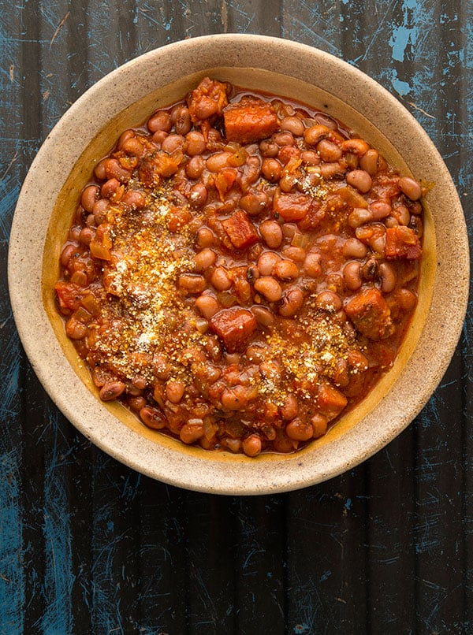

Beans Stew

To home Page
Description
Ghanaians really enjoy beans with a variety of meals cooked different
ways. Beans Stew is a local Ghanaian delicacy that is enjoyed with a
variety of side dishes. Most preferably enjoyed with fried ripe plantains
and some avocado.
Ingredients
- Beans
- Red Oil
- Salted Fish
- Tomato Paste
- Spices(Natural)
- Salmon(Optional)
Steps
- Boil beans till cooked
- Add red oil to pan and place over medium heat
-
Chop some onions and add to the oil with some salmon and salted fish
- Add two spoons of tomato paste and stir
-
Blend pepper (of choice), fresh tomatoes and some spice(ginger, garlic,
shrimp powder, other spice of choice)
-
Add the blend to the pan and allow to stew for 15 - 20 minutes on
slightly lowered heat
-
Add cooked beans after and allow to simmer for another 15 minutes.